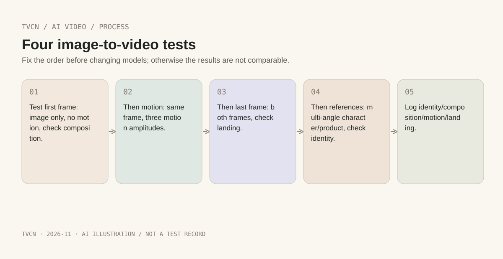
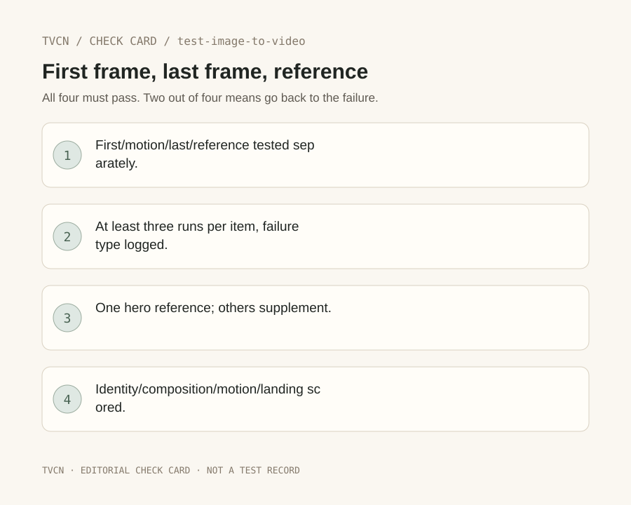
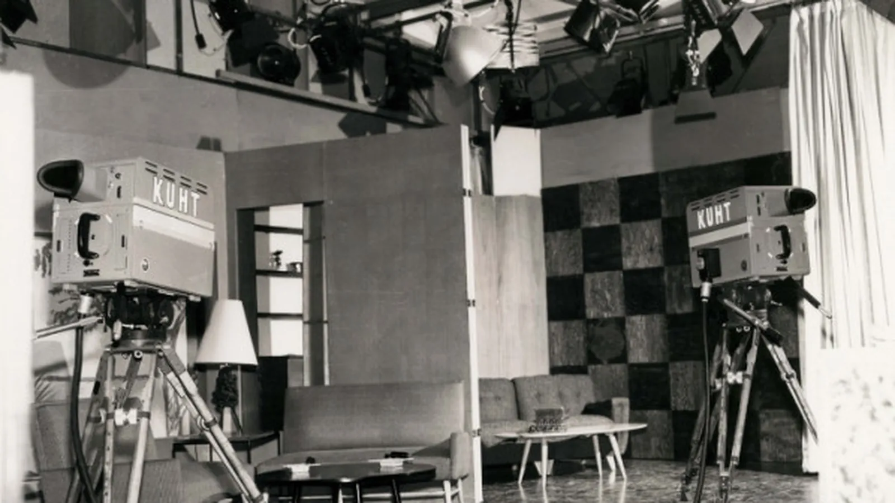
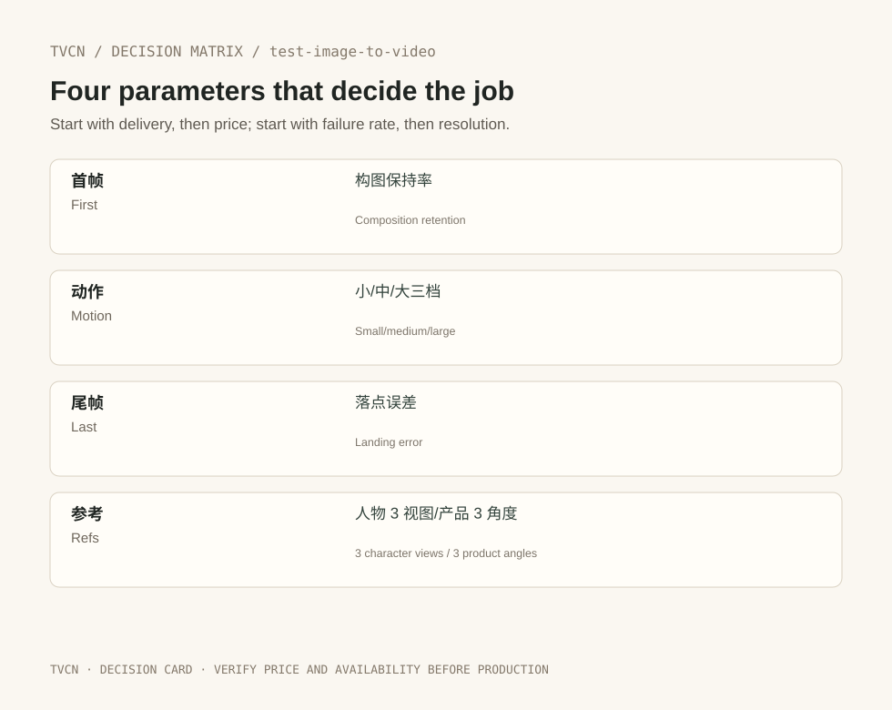

Fit and no-fit / 适用与不适用
- Projects with product/character references that drift.
- Shots needing first/last frames to control the landing.
- Not for: text-only generation with no references.
Do this / 怎么做
- Test first frame: image only, no motion, check composition.
- Then motion: same frame, three motion amplitudes.
- Then last frame: both frames, check landing.
- Then references: multi-angle character/product, check identity.
- Log identity/composition/motion/landing.
Parameters / 参数与判断
| 项目 / Item | 本页口径 / This page |
|---|---|
| 首帧 First | 构图保持率 Composition retention |
| 动作 Motion | 小/中/大三档 Small/medium/large |
| 尾帧 Last | 落点误差 Landing error |
| 参考 Refs | 人物 3 视图/产品 3 角度 3 character views / 3 product angles |
Four image-to-video tests

Avoid / 别踩
- Testing a static first frame; of course it matches.
- Motion too large; identity collapses.
- Mixing angles without a hero; the model doesn't know which to follow.
Go deeper / 继续往下
Image-to-video likeness is dynamic. A static first frame is 100% alike; the real problem is the face changing two seconds into motion. Test order: static frame, light motion, medium motion, last frame, reference identity; one variable at a time.
More frames is not better. First gives start, last gives landing, the model fills between; three middle frames turn it into a slideshow and break motion.
Checks / 验收
- First/motion/last/reference tested separately.
- At least three runs per item, failure type logged.
- One hero reference; others supplement.
- Identity/composition/motion/landing scored.



Image note. Covers, diagrams and step images on this page are editorial illustrations or structure diagrams, not photographs of a test performed here; they are not evidence of measured gear performance. Where an image is AI-assisted, the caption says so. Read the test conditions in the text before treating an image as proof.